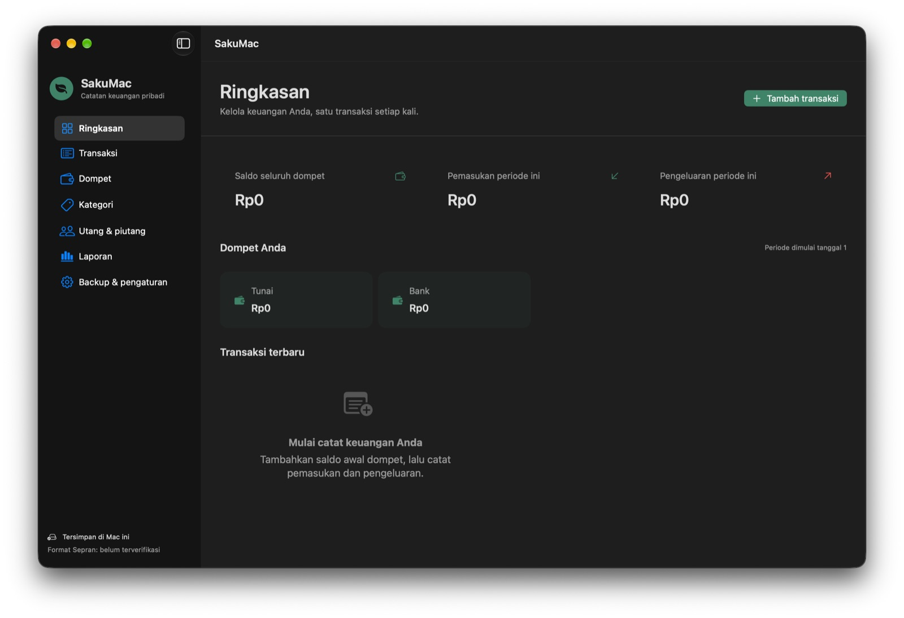

Catat pemasukan, pengeluaran, transfer, dan utang/piutang. Lihat pengeluaran per kategori dan per bulan, impor data dari Sepran, lalu backup ke Gmail.

Pemasukan, pengeluaran, dan transfer antar-dompet dengan saldo awal. Cari, filter, edit, dan ulangi transaksi.
Grafik donat dan daftar total, jumlah transaksi, serta persentase per kategori. Klik kategori untuk melihat tren dan transaksinya.
Pindah bulan dengan ◀ ▶, atau pilih rentang bebas: 3/6/12 bulan, tahun ini, tahun lalu, semua data.
Grafik batang dengan rata-rata, plus tabel per bulan: total, perubahan vs bulan lalu, dan kategori terbesar.
Baca Excel ekspor Sepran. Impor ulang hanya menambah transaksi baru; transaksi yang sudah Anda edit tidak tertimpa.
Kirim backup lengkap sebagai lampiran email ke Gmail dengan satu klik, plus pengingat mingguan. Pulihkan kapan saja.
Catat pokok dan jatuh tempo. Pembayaran otomatis membuat transaksi dan memperbarui saldo.
Ekspor CSV (Excel) dan PDF. Kunci aplikasi dengan PIN atau Touch ID.
xattr -dr com.apple.quarantine /Applications/SakuMac.app
SakuMac ditandatangani ad-hoc, bukan dengan Developer ID Apple. Periksa keaslian berkas dengan SHA-256 di bawah sebelum membukanya.
.xlsx tersebut.Ekspor Excel Sepran tidak memuat nama dompet, saldo awal, transfer, maupun utang/piutang. SakuMac tidak bisa mengirim data balik ke Sepran. SakuMac bukan produk resmi Sepran.
Seluruh data keuangan yang sudah ada di SakuMac: 1.653 transaksi (1 Mei 2024 – 3 Okt 2026), 3 dompet, 33 kategori, total pengeluaran Rp506.558.457.
Aplikasi menyimpan data di Mac (~/Library/Application Support/SakuMac), tanpa server, akun, atau pelacakan. Data hanya keluar dari Mac saat Anda sendiri mengirim backup ke Gmail atau Google Drive. Catatan: berkas backup di halaman ini bersifat publik dan dapat diunduh siapa pun. Berkas data dan backup tidak dienkripsi oleh aplikasi; aktifkan FileVault untuk perlindungan disk.